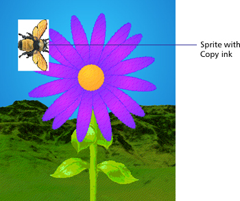
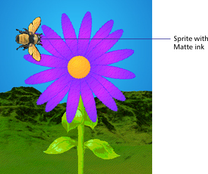

Using Director > Sprites > Using sprite inks
Using Director > Sprites > Using sprite inks |
Using sprite inks
You can change a sprite's appearance on the Stage by applying inks. Sprite inks change the display of a sprite's colors. Inks are most useful to hide white bounding rectangles around images, but they can also create many compelling and useful color effects. Inks can reverse and alter colors, make sprites change colors depending on the background, and create masks that obscure or reveal portions of a background.
You change the ink for a sprite in the Property Inspector or with Lingo.


For a demonstration and description of all the inks, click Show Me.
To achieve the fastest animation rendering on the screen, use Copy ink; other ink types may have a slight effect on performance.
To change a sprite's ink with the Property Inspector:
1 |
Select the sprite. |
2 |
Choose the desired type of ink from the Ink pop-up menu in the Sprite tab of the Property Inspector. |
To change a sprite's ink with Lingo:
Set the sprite's ink sprite property. See ink.
Note: If Background Transparent and Matte inks don't seem to work, the background of the image may not be true white. Also, if the edges of the image have been blended or are fuzzy, applying these inks may create a halo effect. Use the Paint window or an image editing program to change the background to true white and harden the edges. You can also re-create the image with an alpha channel (transparency) and re-import the image.